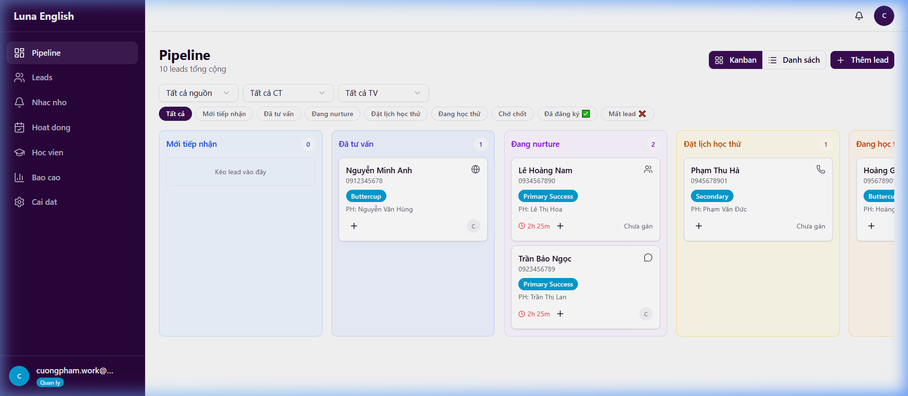
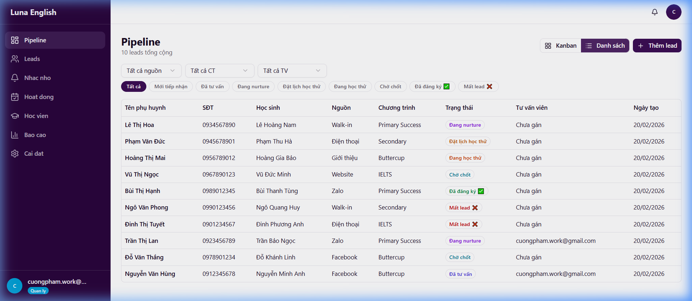
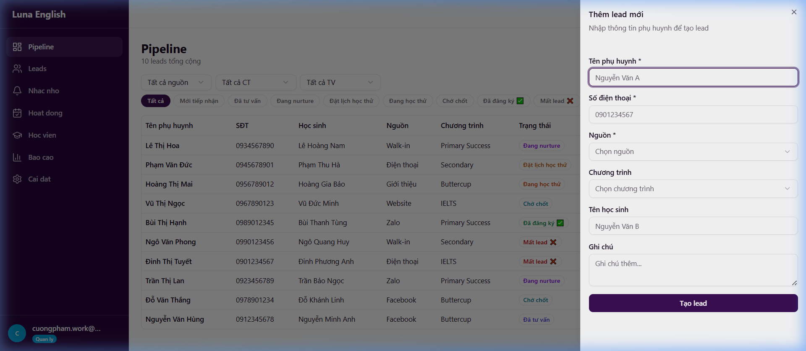
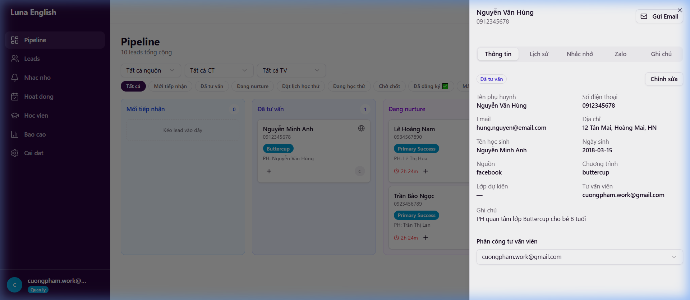
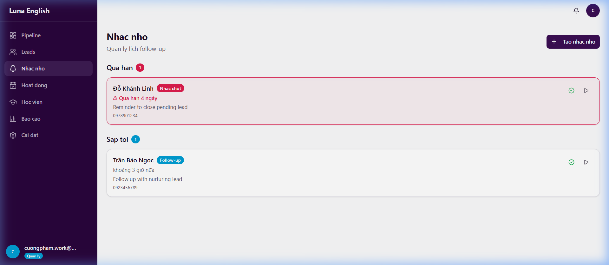
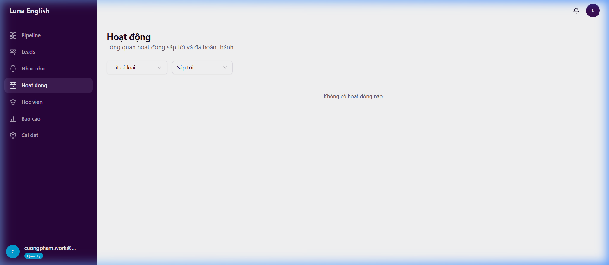
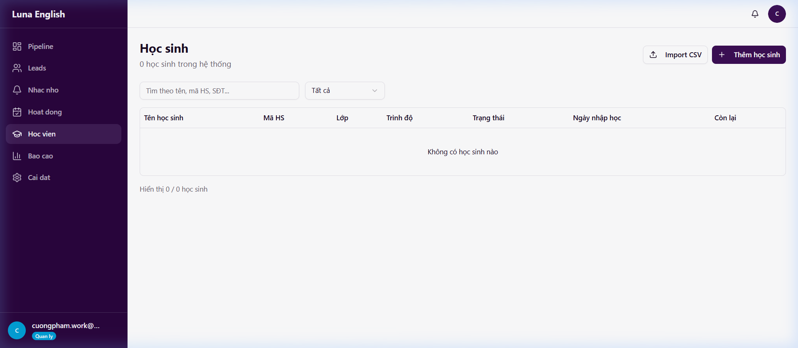
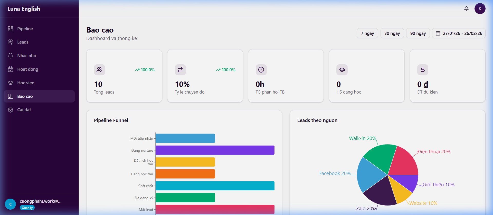
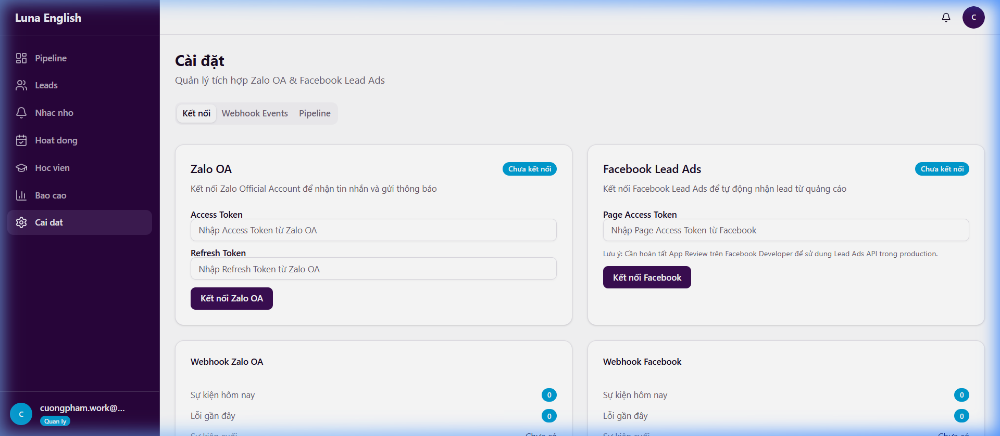
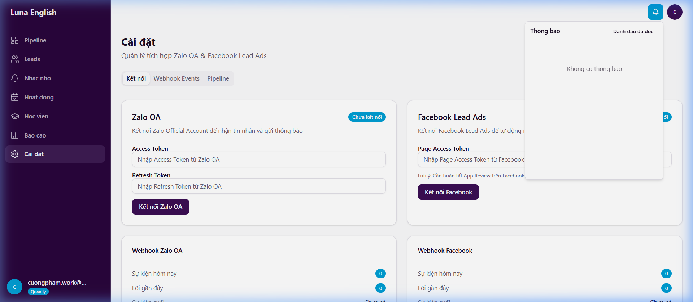

LunaCRM
Hướng Dẫn Sử Dụng
Luna English — Tân Mai — Phiên bản 1.0
1. Giới thiệu nhanh
Luna CRM là phần mềm quản lý học viên từ lúc tiếp nhận liên hệ đến khi đăng ký thành công và theo dõi quá trình học. Toàn bộ giao diện bằng tiếng Việt.
3 loại tài khoản
| Vai trò | Thấy gì | Làm gì |
|---|
| Quản lý (Admin) | Tất cả | Toàn quyền: leads, học viên, báo cáo, cài đặt, phân quyền |
| Tư vấn viên (Advisor) | Pipeline, Nhắc nhở, Hoạt động, Học viên | Chăm sóc lead được giao, tạo nhắc nhở, ghi chú |
| Marketing | Pipeline (xem), Báo cáo | Chỉ xem, không sửa được lead |
3. Pipeline (Bảng Kanban) — Màn hình chính

Giao diện Pipeline dạng Kanban — mỗi cột là một giai đoạn, mỗi thẻ là một lead
8 cột giai đoạn
| Cột | Ý nghĩa | Khi nào lead ở đây |
|---|
| Mới tiếp nhận | Vừa có liên hệ mới | Lead mới tạo hoặc từ Facebook/Zalo vào |
| Đã tư vấn | Đã gọi/nhắn tin lần đầu | Sau khi tư vấn viên liên hệ xong |
| Đang nurture | Đang chăm sóc, chưa quyết định | Phụ huynh cần thời gian suy nghĩ |
| Đặt lịch học thử | Đã hẹn ngày học thử | Phụ huynh đồng ý cho con thử |
| Đang học thử | Con đang học thử | Trong tuần học thử |
| Chờ chốt | Chờ phụ huynh quyết định | Sau học thử, đang thương lượng |
| Đã đăng ký | Thành công! Đã đóng tiền | Chuyển thành học viên chính thức |
| Mất lead | Không đăng ký | Phụ huynh từ chối, mất liên lạc |
Cách dùng Pipeline
Chuyển sang dạng danh sách: Bấm nút "Danh sách" ở góc trên bên phải.

Giao diện Pipeline dạng Danh sách — xem lead dưới dạng bảng
Kéo thả lead giữa các cột: Bấm giữ vào thẻ lead → kéo sang cột mới → thả ra. Hệ thống tự ghi lại lịch sử. Nếu kéo vào "Mất lead" → hệ thống sẽ hỏi lý do.
Lọc lead: Dùng thanh lọc phía trên để lọc theo nguồn (Facebook, Zalo, Walk-in...), chương trình (Buttercup, IELTS...), giai đoạn, hoặc tư vấn viên phụ trách.
Tìm nhanh: Bấm Ctrl+K → gõ tên phụ huynh, tên học sinh, hoặc SĐT → bấm vào kết quả.
Thêm lead mới
Bấm nút "+ Thêm lead", điền:

Form thêm lead mới — điền đầy đủ thông tin phụ huynh và học sinh
- Tên phụ huynh (bắt buộc)
- Số điện thoại (bắt buộc, đúng 10 số)
- Nguồn (bắt buộc): Facebook, Zalo, Walk-in, Website, Phone, Referral
- Chương trình (tùy chọn): Buttercup, Primary Success, Secondary, IELTS
- Tên học sinh, Ghi chú (tùy chọn)
Chi tiết lead (panel bên phải)
Bấm vào thẻ lead để mở panel chi tiết:

Panel chi tiết lead — hiển thị thông tin, lịch sử hoạt động, nhắc nhở, Zalo và ghi chú
Panel gồm 5 tab:
| Tab | Nội dung |
|---|
| Thông tin | Tên, SĐT, email, địa chỉ, chương trình, ghi chú. Bấm "Sửa" để chỉnh |
| Lịch sử | Mọi hoạt động: cuộc gọi, tin nhắn, ghi chú, thay đổi giai đoạn |
| Nhắc nhở | Các lịch nhắc liên quan lead này |
| Zalo | Gửi tin nhắn Zalo cho phụ huynh |
| Ghi chú | Ghi chú riêng theo từng giai đoạn: kết quả, bước tiếp theo |
Ghi hoạt động cho lead
Trong tab Lịch sử, bấm "Thêm hoạt động", chọn loại: Cuộc gọi, Tin nhắn, Gặp mặt, Ghi chú, Tư vấn, Lịch gọi, Học thử.
4. Nhắc nhở

Trang Nhắc nhở — quản lý các lịch nhắc follow-up, học thử, chốt đơn
Hiển thị tất cả lịch nhắc, chia 3 nhóm:
| Nhóm | Màu | Ý nghĩa |
|---|
| Quá hạn | Đỏ | Nhắc nhở đã qua ngày mà chưa xử lý |
| Hôm nay | Mặc định | Việc cần làm hôm nay |
| Sắp tới | Xám nhạt | 7 ngày tới |
4 loại nhắc nhở
| Loại | Ý nghĩa |
|---|
| Follow-up | Gọi lại / nhắn lại cho phụ huynh |
| Nhắc học thử | Nhắc phụ huynh về buổi học thử sắp tới |
| Nhắc chốt | Nhắc follow-up để chốt đăng ký |
| Gia hạn | Nhắc gia hạn cho học viên sắp hết khóa |
Thao tác
- Hoàn thành → bấm nút xong. Follow-up sẽ tự tạo nhắc mới sau 7 ngày
- Bỏ qua → có thể ghi lý do
- Tạo mới → bấm "Tạo nhắc nhở", chọn lead và loại nhắc
Nhắc nhở tự động: Hệ thống tự tạo khi lead chuyển giai đoạn, khi đăng ký thành công (nhắc gia hạn), và khi hoàn thành follow-up (tạo tiếp sau 7 ngày).
5. Hoạt động

Trang Hoạt động — tổng hợp cuộc gọi, tư vấn, học thử đã lên kế hoạch
Trang tổng hợp các hoạt động đã lên lịch: cuộc gọi đã hẹn, buổi tư vấn sắp tới, buổi học thử, hoạt động định kỳ hàng tuần.
Mỗi hoạt động có trạng thái: Chờ xử lý Hoàn thành Đã hủy
6. Học viên

Trang Học viên — danh sách học sinh đã đăng ký, trạng thái và thông tin khóa học
Quản lý học sinh đã đăng ký chính thức.
Bảng học viên
| Cột | Ý nghĩa |
|---|
| Tên học sinh | Tên hoặc tên phụ huynh |
| Mã HS | Mã nội bộ |
| Lớp | Lớp đang học |
| Trình độ | Level hiện tại |
| Trạng thái | Đang học / Bảo lưu / Tốt nghiệp / Nghỉ |
| Ngày nhập học | Ngày bắt đầu |
| Còn lại | Số ngày còn lại (đếm ngược) |
Trạng thái
| Trạng thái | Màu | Ý nghĩa |
|---|
| Đang học | Xanh lá | Đang tham gia lớp bình thường |
| Bảo lưu | Vàng | Tạm nghỉ, giữ chỗ (cần ghi lý do) |
| Tốt nghiệp | Xanh dương | Hoàn thành khóa học |
| Nghỉ | Đỏ | Rời trung tâm (cần ghi lý do) |
Thao tác
- Tìm kiếm: gõ tên, mã HS, hoặc SĐT phụ huynh
- Lọc: theo trạng thái, theo lớp
- Thêm: bấm nút "Thêm", điền thông tin
- Import CSV: bấm "Import CSV" → chọn file → map cột → import
- Xem chi tiết: bấm vào hàng → mở panel sửa thông tin, đổi trạng thái
7. Báo cáo (chỉ Admin & Marketing)

Dashboard báo cáo — KPI, biểu đồ phễu, nguồn lead, xu hướng và hiệu suất tư vấn
4 thẻ KPI
| Thẻ | Ý nghĩa | Ví dụ |
|---|
| Tổng leads | Số lead trong khoảng thời gian | 128 (+12%) |
| Tỉ lệ chuyển đổi | % lead đăng ký thành công | 23.5% (+2.1%) |
| Thời gian phản hồi | TB bao lâu sau nhận lead thì liên hệ | 1.5 giờ |
| Học viên đang học | Số học sinh active | 45 |
4 biểu đồ
- Phễu Pipeline — lead rơi ở đâu nhiều nhất
- Nguồn lead — biểu đồ tròn: Facebook, Zalo, Walk-in...
- Xu hướng tháng — số lead mới theo tháng
- Hiệu suất tư vấn — xếp hạng: ai chuyển đổi nhiều/nhanh nhất
Lọc thời gian: 7 ngày, 30 ngày, 90 ngày, hoặc tùy chọn.
8. Cài đặt (chỉ Admin)

Trang Cài đặt — kết nối Zalo OA, Facebook, cấu hình webhook và pipeline
Tab Kết nối
- Zalo OA: Bấm "Kết nối" → đăng nhập Zalo → cho phép → xong
- Facebook: Bấm "Kết nối" → đăng nhập Facebook → chọn Page → xong
- Hiển thị trạng thái: kết nối từ ngày nào, token hết hạn khi nào
Tab Webhook Events
Bảng ghi lại sự kiện từ Zalo/Facebook — kiểm tra tin nhắn/lead có vào đúng không.
Tab Cấu hình Pipeline
Thiết lập "Bước tiếp theo" mặc định cho từng giai đoạn. Ví dụ: "Mới tiếp nhận" → checklist: "Gọi trong 2h", "Hỏi nhu cầu"...
9. Thông báo

Panel thông báo — hiển thị khi bấm vào biểu tượng chuông ở góc trên bên phải
Biểu tượng chuông ở góc trên bên phải:
- Số đỏ = thông báo chưa đọc
- Bấm vào → xem 20 thông báo gần nhất
- Bấm "Đánh dấu tất cả đã đọc" để xóa số đỏ
Hệ thống gửi thông báo khi: lead thay đổi giai đoạn, nhắc nhở đến hạn, tin nhắn mới từ Zalo/Facebook, hoạt động hoàn thành.
10. Gửi tin nhắn Zalo / Email
Gửi Zalo (chi tiết lead → tab Zalo)
- Bấm "Gửi tin nhắn Zalo"
- Chọn mẫu tin nhắn (có sẵn theo từng giai đoạn)
- Nội dung tự điền tên phụ huynh, tên học sinh
- Bấm Gửi → tin vào hàng đợi, gửi tự động trong vài phút
Gửi Email (chi tiết lead → nút Email)
- Bấm biểu tượng email
- Chọn mẫu hoặc viết tùy ý
- Điền tiêu đề, nội dung
- Bấm Gửi
Lưu ý: Zalo yêu cầu phụ huynh đã follow Zalo OA của Luna English trước. Nếu chưa follow, không gửi được.
Checklist Công Việc
11. Checklist hàng ngày
Buổi sáng (đầu ngày)
1. Kiểm tra Nhắc nhở — Vào menu Nhắc nhở, xử lý theo ưu tiên:
- Xem nhóm "Quá hạn" (đỏ) → xử lý hết trước
- Gọi/nhắn cho phụ huynh → bấm "Hoàn thành" hoặc "Bỏ qua" (ghi lý do)
- Xem nhóm "Hôm nay" → lên kế hoạch xử lý trong ngày
- Xem nhóm "Sắp tới" → nắm lịch tuần
2. Kiểm tra Thông báo
- Bấm biểu tượng chuông → đọc thông báo mới
- Có lead mới từ Facebook/Zalo? → vào Pipeline kiểm tra cột "Mới tiếp nhận"
3. Xử lý lead "Mới tiếp nhận"
- Vào Pipeline → xem cột đầu tiên
- Mỗi lead mới: gọi điện/nhắn tin trong vòng 2 giờ
- Sau khi tư vấn → kéo lead sang cột "Đã tư vấn"
- Ghi hoạt động: bấm vào lead → Lịch sử → Thêm hoạt động → "Cuộc gọi"
Cuối ngày
- Pipeline: còn lead nào "Mới tiếp nhận" chưa xử lý?
- Nhắc nhở: còn mục nào "Quá hạn"?
- Mọi cuộc gọi/tư vấn trong ngày đã ghi vào Lịch sử
12. Khi có phát sinh (trong ngày)
Lead mới (từ bất kỳ nguồn nào)
- Kiểm tra thông tin: tên, SĐT đã đúng chưa
- Gọi điện tư vấn lần đầu
- Ghi kết quả cuộc gọi vào tab Lịch sử
- Kéo lead sang giai đoạn phù hợp
- Tạo nhắc nhở follow-up nếu phụ huynh chưa quyết định
Phụ huynh đồng ý học thử
- Kéo lead sang "Đặt lịch học thử"
- Ghi chú ngày/giờ học thử vào tab Ghi chú
- Tạo nhắc nhở "Nhắc học thử" trước ngày học thử 1 ngày
- Gửi tin nhắn Zalo/email xác nhận cho phụ huynh
Học sinh đang học thử
- Kéo lead sang "Đang học thử"
- Sau buổi học thử → ghi nhận xét vào tab Ghi chú
- Tạo nhắc nhở "Nhắc chốt" sau 1–2 ngày
Phụ huynh đăng ký thành công
- Kéo lead sang "Đã đăng ký"
- Hệ thống tự tạo hồ sơ học viên + nhắc gia hạn
- Vào Học viên → kiểm tra: lớp, trình độ, ngày nhập học
Phụ huynh từ chối
- Kéo lead sang "Mất lead"
- Hệ thống hỏi lý do → chọn/ghi lý do
- Không cần làm gì thêm, lead được lưu để phân tích sau
Học viên muốn bảo lưu
- Vào Học viên → tìm học sinh → bấm vào
- Đổi trạng thái sang "Bảo lưu" + ghi lý do
- Tạo nhắc nhở follow-up để hỏi thăm sau 2–4 tuần
Tin nhắn Zalo/Facebook từ phụ huynh
- Kiểm tra Thông báo (chuông)
- Vào lead → tab Zalo hoặc Lịch sử
- Trả lời phụ huynh + ghi hoạt động "Tin nhắn"
13. Checklist hàng tuần
Thứ Hai — Admin / Quản lý
- Vào Báo cáo → xem 4 KPI tuần trước (chọn "7 ngày")
- Tổng leads? Tỉ lệ chuyển đổi? Thời gian phản hồi?
- Xem Phễu Pipeline → lead rơi nhiều ở giai đoạn nào?
- Xem Hiệu suất tư vấn → ai cần hỗ trợ thêm?
- Xem Nguồn lead → nguồn nào hiệu quả nhất?
- Kiểm tra Báo cáo tuần tự động (cron gửi thứ 2 lúc 8h sáng)
Thứ Hai — Tư vấn viên
- Xem lại toàn bộ lead đang phụ trách trên Pipeline
- Lead "Đang nurture" quá 2 tuần → follow-up mạnh hoặc đóng
- Lead "Chờ chốt" quá 3 ngày → gọi lại ngay
Thứ Sáu — Cuối tuần
- Rà soát Nhắc nhở sắp tới → xử lý trước cuối tuần
- Cập nhật ghi chú cho lead quan trọng
- Không để lead "Mới tiếp nhận" tồn đọng qua cuối tuần
14. Checklist hàng tháng (Admin)
- Vào Báo cáo → chọn "30 ngày" → xem tổng quan tháng trước
- So sánh: tổng leads, tỉ lệ chuyển đổi, nguồn hiệu quả nhất
- Vào Học viên → lọc "Đang học"
- Ai sắp hết khóa? (cột "Còn lại" < 30 ngày) → liên hệ gia hạn
- Rà soát lead "Đang nurture" quá 30 ngày → đóng hoặc tiếp tục
- Rà soát lead "Mất lead" → phân tích lý do → cải thiện quy trình
- Kiểm tra Cài đặt → Kết nối: Zalo/Facebook vẫn connected?
Mẹo Sử Dụng
15. Mẹo & Phím tắt
Phím tắt
Ctrl+K (hoặc Cmd+K trên Mac): Tìm lead nhanh — gõ tên hoặc SĐT.
Tiết kiệm thời gian
- Dùng mẫu tin nhắn Zalo có sẵn thay vì gõ tay mỗi lần
- Hoàn thành follow-up → hệ thống tự tạo nhắc mới sau 7 ngày
- Dùng bộ lọc trên Pipeline để chỉ xem lead của mình
Tránh sai sót
- Luôn ghi hoạt động sau mỗi cuộc gọi/tư vấn
- Ghi lý do khi chuyển lead sang "Mất lead"
- Kiểm tra nhắc nhở quá hạn mỗi sáng
- SĐT phải đúng 10 số — kiểm tra kỹ khi nhập lead mới
Quy tắc vàng: Lead mới phải được liên hệ trong vòng 2 giờ. Phản hồi càng nhanh, tỉ lệ chuyển đổi càng cao.